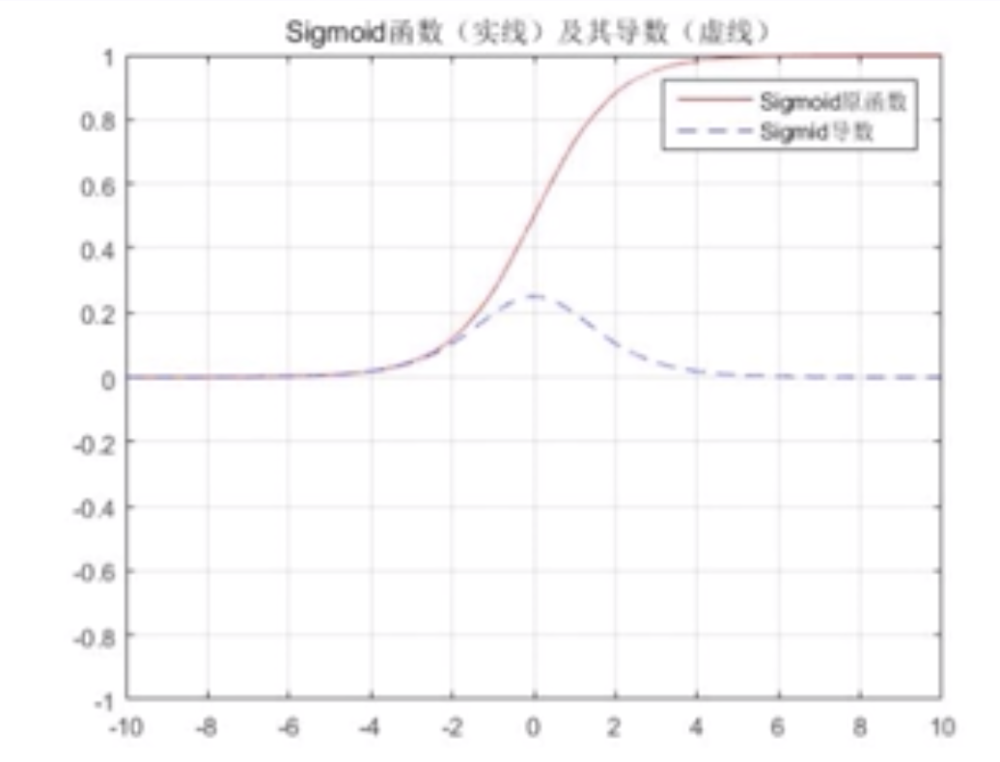
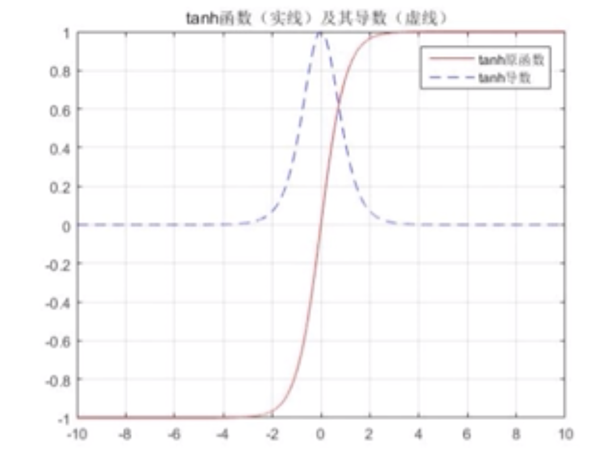
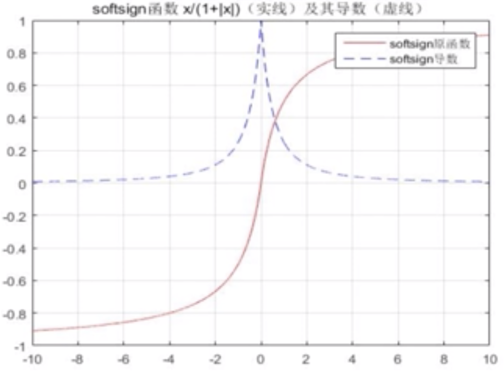
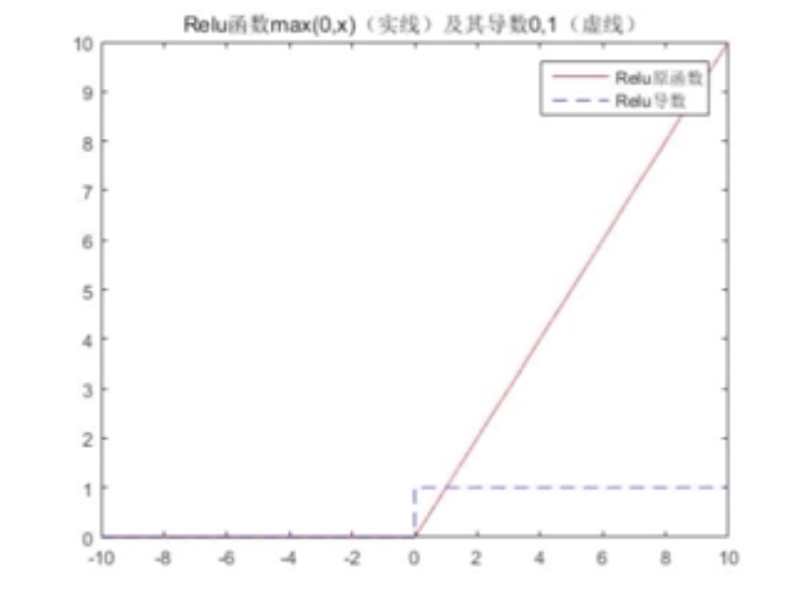
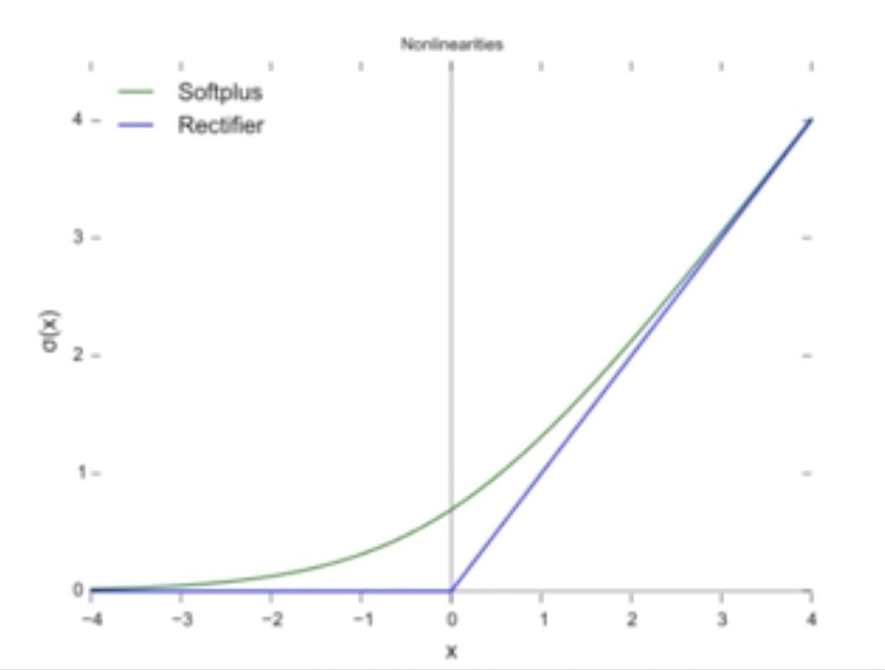

激活函数
Sigmoid函数
$$
f(x)=\frac{1}{1+e^{-x}}
$$

Sigmoid激活函数与机器学习当中的逻辑回归函数的计算公式完全一样。它的取值的分布在0到1之间，并且非常平滑。其主要用在一些简单的二分类或者是隐藏层数比较少的网络结构当中。
优势：取值在0到1之间，在做相应分类结果的时候非常容易的根据输出来进行判断。
劣势：Sigmoid激活函数如果放在深层的网络结构当中的时候，进行相应的梯度或者权重值修改的时候，容易引发梯度消散的问题。具体原因是因为Sigmoid激活函数的到函数在$x=0$时达到最大值$\frac{1}{4}$。如果我们使用标准方法来初始化网络中的权重，那么会使用一个均值为0标准差为1的高斯分布，我们会发现，$w_{j} \sigma^{\prime}\left(z_{j}\right)<\frac{1}{4}$，所以在进行所有这些项的乘积时，最终结果肯定会指数及下降，项越多，乘积下降的也就越快。
tanh函数
$$
\tanh x=\frac{e^{x}-e^{-x}}{e^{x}+e^{-x}}
$$

对比Sigmoid函数，tanh函数的取值范围在-1到1之间，并且平均值为0。这些都是非常好的性质。不像Sigmoid函数只有0以上的增长的过程，没有下降的过程。我们经常在RNN循环神经网络结构中使用这个激活函数。
Softsign函数
$$
f(x)=\frac{x}{|x|+1}
$$

取值区间与tanh相同在-1与1之间。
ReLU函数
$$
y=\left\{\begin{array}{ll}{x,} & {x \geq 0} \ {0,} & {x<0}\end{array}\right.
$$

这个激活函数在业务中使用的是最多的，而且从应用来看效果是最好的一个。ReLU激活函数有一个特别明显的特征：当x取值小于0的时候对应的y值恒等于0；当x大于等于0时，对应的y取x。也就是说：当取值为正向的时候感知器才会进行相应的采纳，当取值为负向的反面的时候那么感知器会将其映射到0.
Softplus函数
$$
f(x)=\ln \left(e^{x}+1\right)
$$

这个函数与ReLU激活函数很相似，但是Softplus函数在输出值从0到正无穷的过程中，不像ReLU有一个明确的拐点，而是有一个平滑的过度。这个激活函数使用相对较少。
激活函数设计需考虑的因素
- 非线性：如果是线性的话，那么整个网络则相当于一个单层的线性模型，不能很好的工作。
- 连续可微：这个属性对于基于梯度优化的算法来说是必要的。
- 有界性：如果激活函数是有界的，那么基于梯度的训练方法往往更加稳定。如果是无界的那么训练往往更加有效率，但是训练容易发散。此时可以适当减小学习率。
- 单调性：如果激活函数是单调的，与单层模型相关的损失函数是凸的。
- 平滑性：有单调导数的激活函数已经被证明在某些情况下泛化效果更好。
- 原点附近近似的Identity（$f(x) \approx x$）：当激活函数有这个特点时，对于小的随机初始化权重神经网络能够更加有效的学习。否则在初始化权重时往往需要考虑一些特殊的设计。